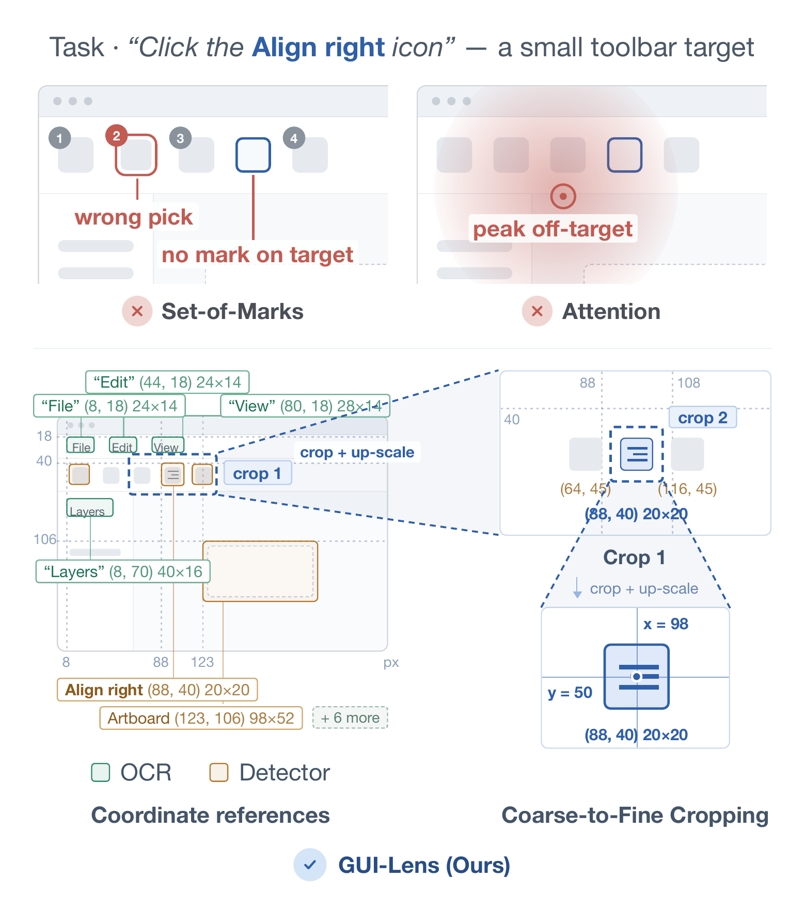
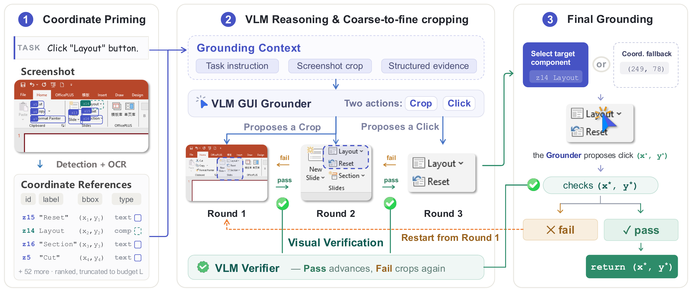
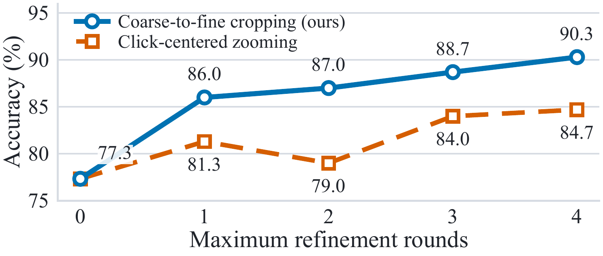
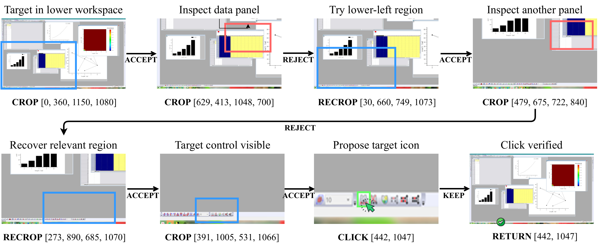

Figure 1. On a small toolbar target, Set-of-Marks may pick the wrong mark or have no mark on the target, and attention may peak off-target. GUI-Lens lists coordinate references and crops toward the target before clicking.
GUI grounding maps natural-language instructions to click locations and is essential for reliable GUI agents. The task remains difficult on high-resolution, densely populated interfaces because a vision-language model (VLM) may recognize a requested control without locating it precisely enough for interaction. Most existing methods provide various forms of localization assistance, but still rely on a direct click prediction, allowing visual ambiguity or an inaccurate initial estimate to propagate to the final result.
In this paper, we introduce GUI-Lens, a coarse-to-fine grounding framework that allows a general-purpose VLM to determine the target through active visual observations. Specifically, GUI-Lens extracts OCR text and detected UI components from the screenshot and presents their positions as coordinate references. Using the instruction, the current view, and these references, the VLM selects the region and scale of the next view, which is cropped and enlarged to provide finer visual details. This process continues over successively focused views until the target is determined. Proposed crops and clicks are checked against the instruction throughout the process, and the final local position is mapped back to the original screen coordinates.
Experiments on four GUI grounding benchmarks and general-purpose VLM backends show that GUI-Lens improves overall grounding accuracy by up to 24.9 percentage points and achieves state-of-the-art performance with GPT-5.5.

Figure 2. Overview of GUI-Lens. Coordinate Priming converts OCR text and detected UI components into coordinate references. Using the task, the current crop and the visible references, the VLM either selects a finer crop or proposes a click. Accepted crops advance the process, rejected proposals restart it, and the accepted final click is mapped back to the original screen.
Table 1. Accuracy (%) on all 1,581 ScreenSpot-Pro questions. Every baseline uses the same base model for all of its calls.
| Base model | Direct | ZoomClick | BAMI | AdaZoom-GUI | GUI-Lens | Gain |
|---|---|---|---|---|---|---|
| GPT-5.5 | 74.8 | – | – | – | 87.9 | +13.1 |
| Claude Opus 4.7 | 57.4 | – | – | – | 82.3 | +24.9 |
| DeepSeek-V4.1-Flash | 26.6 | 58.6 | 55.0 | 27.5 | 72.9 | +46.3 |
| GLM-5.3-Flash | 18.3 | 38.0 | 49.9 | 52.1 | 65.7 | +47.4 |
| MiniMax-M3 | 26.4 | – | – | – | 47.4 | +21.0 |
Table 2. Success rate (%) on three OSWorld domains; selected baselines are from the OSWorld-Verified leaderboard. Avg. is weighted by tasks.
| Method (model) | Chrome | Multi-App | OS | Avg. |
|---|---|---|---|---|
| Claude Sonnet 4.6 | 78.5 | 60.2 | 91.7 | 70.1 |
| Claude Opus 5 | 80.2 | 76.8 | 79.2 | 78.1 |
| Claude Fable 5 | 78.1 | 79.3 | 95.8 | 81.4 |
| Muse Spark 1.1 | 73.8 | 71.7 | 95.8 | 75.9 |
| OpenAPA (Gemini 3.1 Pro) | 71.7 | 65.7 | 83.3 | 70.0 |
| Pointer Agent (Claude Opus 4.7) | 78.2 | 74.4 | 95.8 | 78.6 |
| GUI-Lens (Claude Opus 4.7) | 93.5 | 80.0 | 100.0 | 86.8 |

Figure 3. Coarse-to-fine cropping versus click-centered zooming on ScreenSpot-Pro with GPT-5.5.

Figure 4. A grounding trajectory of GUI-Lens. Verification rejects crop proposals that omit the target, after which the framework selects a new region, progressively exposes the target control, and verifies the final click.
@article{fu2026guilens,
title={GUI-Lens: Enabling Precise GUI Grounding for Off-the-Shelf VLMs via Coarse-to-Fine Cropping},
author={Fu, Zichuan and Wang, Shirong and Zhang, Wenlin and Li, Guojing and Deng, Yimin and Gao, Jingtong and Qi, Junjia and Yan, Hanyu and Zheng, Yefeng and Li, Xiaopeng and Wang, Wanyu and Wu, Xian and Zhao, Xiangyu},
journal={arXiv preprint arXiv:2608.03270},
year={2026}
}